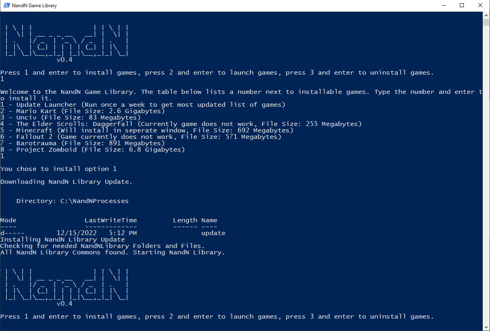

NandN installer
Install the NandN game library!Tutorial
Once you've downloaded the script, drag the file into the directory C:\Windows\tracing. Then after that, right click on the file and click "Run with PowerShell". After this, you should see a window pop up and enter 1 and update the launcher by entering 1 again.
It should look like this (the versions might be different)
Now that you've updated your launcher, you are ready to install some games! Enter 1 once more to pull up the list of installable games. This time, choose the game of your choice. For this tutorial, we will be entering 2, Mario Kart (Wii) but other installations will be similar. This may take a few minutes so be patient.
When it is done, a notepad document and a program named "Dolphin" will appear. Now read through the setup guide and you should be ready to play Mario Kart!